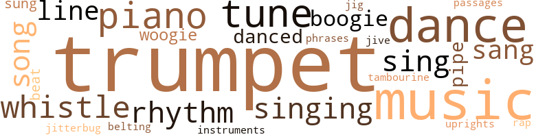
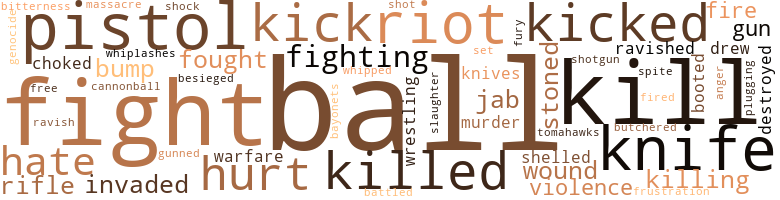

Man Walking on Eggshells, by Simmons, Herbert Alfred (1962)
154 music-related terms matched in this text.
Most frequent terms in this topic: trumpet (26); music (24); dance (18); tune (11); piano (10)
belt_out.v.01
Definition: sing loudly and forcefully
| word | sentence |
|---|---|
| belting | He just walked up off the street while they were swinging " Going to Chicago Blues , " grabbed the micro - phone and started belting out that tune . |
boogie.n.01
Definition: an instrumental version of the blues (especially for piano)
| word | sentence |
|---|---|
| boogie-woogie | All over the schoolyard you could hear the squeal of Mexican huaraches stomping out rhythm to a boogie-woogie beat . |
| boogie-woogie | All over the schoolyard Mexican huaraches stomped out rhythm to a boogie-woogie beat . |
| boogie | " It 's the Sumner boogie . " " |
| boogie-woogie | He even made a couple of sets over in East St. Louis at the Red Top , playing corn - bread music for the boogie-woogie crowd , but a cat could only take so much of that kind of stuff without snapping his wig , so he turned most of those kinds of gigs down . |
cornet.n.01
Definition: a brass musical instrument with a brilliant tone; has a narrow tube and a flared bell and is played by means of valves
| word | sentence |
|---|---|
| trumpet | " Is that all you got to do , fill that boy 's head with all that nonsense about jazz and blow on that old trumpet when you think nobody 's around to know ? " |
| trumpet | Unwwwwnnnn . . . More piercing than Argustus 's good-timing trumpet balling them back up there in Chicago . |
| trumpet | Raymond led the parade , in his block , blowing on Argus - tus 's trumpet , which he had sneaked out of the house after getting Helen to promise not to tell . |
| trumpet | Every week Wil - bur let him shine his trumpet and listen to him practice . |
| trumpet | Mama started to send it back , 'cause Uncle Wilbur also sent him a trumpet and told Mama if she wanted to keep the money she 'd have to let him play it . |
| trumpet | " Well , shucks , I do n't never get a chance to practice on my trumpet . " |
| trumpet | " Aw come on Jack , lay off that goddamn trumpet , will ya ? " |
| trumpet | His ole grandpa could really play that trumpet , kind of ole-fash - ioned , and sometimes a little corny , but man he could whale ! |
| trumpet | " Raymond Douglas , do you mean to stand there and tell me you think I 'd get mad at you just because you 'd rather practice on your silly ole trumpet than go to the dance with me ? " |
| trumpet | She had been expecting something , she was n't sure what , but it certainly had n't been-the way Raymond could play that trumpet . |
| trumpet | The drum roll was back , trumpet scream , the hard herd of cool cats cutting a rug with hip chicks in the middle of the stadium aisles . |
| trumpet | The flaming notes of Argustus 's trumpet bellowed up to haunt Mae again . |
| trumpet | " Man , you hear , ' bout that stud on trumpet out at the Showbar ? " |
| trumpet | They had n't known a thing about that new boy on trumpet . |
| trumpet | That new boy on trumpet showed them a few things . |
| trumpet | That new boy on trumpet cried on the stand and the tears rolled out in big , bubbly notes weaving a spell so powerful you could almost stick out your hand and feel the weight of the blues . |
| trumpet | " The first trumpet chair 'll always be open . '' |
| trumpet | Wilbur got his trumpet out of the case , stroked the golden sides for a second or two and then raised it to his lips with his left hand . |
| trumpet | He had bought them a radio , and a toy trumpet for the boy . |
| trumpet | Every time he saw his uncle put the trumpet to his lips with his left hand and blow he felt like everything in the pit of his stomach was shaking loose . |
| trumpet | Strange music floated from the radio gyrating behind a trumpet solo from the throat of a performer who played like he had a blues - colored soul . |
| trumpet | " That great classic trumpet solo you heard , in ' Big City Blues , ' was taken by St. Louis 's own Raymond Douglas , when he was with the great Bennie Williams aggregation , " Mae heard the disc jockey say . |
| trumpet | He only stopped when he reached the point where to continue would ruin his lips for playing a horn forever , and the three-room apartment was filled with the sound of a golden-throated trumpet . |
| trumpet | He is more powerful than any Jack Johnson , Florence Mills , or Joe Louis , for he is a people 's spokesman , but not like Frederick Douglas , or Booker Washington , no glib-tongued orator he , but he is the gauge of the people and wherever he goes they come out to see him , for he has come into their hearts through the blues , a medium they understand ; his rod is a golden trumpet and when he puts it to his lips and speaks they listen for the walls of Jericho to come tumbling down , believing he can roll back the Red Sea and lead them to the Promised Land . |
| trumpet | Argustus motioned Raymond to follow him into the living room and they sat down on the green davenport that Raymond used to sit on and practice his trumpet when he was still in high school . |
| trumpet | Grandpa had a box you could play music on when you winded it up and a big trumpet he would take out of a black suitcase and shine till it glowed like a Christmas tree , and he told him stories . |
dance.n.01
Definition: an artistic form of nonverbal communication
| word | sentence |
|---|---|
| dance | " Raymond , you ever see your mama dance ? " |
| dance | I have n't even been to a dance since I graduated from col - lege . " |
| dance | . . . Aw , yeh , now , you know you had it coming to ya . . . Raymond knew she could smile , even laugh sometimes , but dance ? |
| dance | He tried to pick her up and swing her around , but she was too heavy so he settled for shuffling her around in a way that slightly resembled a dance . |
| dance | Then it was time for the annual block dance , over in the Cote Brilliante school - yard , and Helen wanted to go . |
| dance | " So this is what they call a block dance . " |
| dance | " As if we did n't have enough to do tonight without them shoving this damn dance off on us , and it ai n't even in our district . " |
| dance | They said it was in connection with the gang killing of a police officer over at the block dance . |
| dance | In May they had a school dance , at three o'clock on the second-floor hallway , and as usual Codene found some kind of way to front him off in front of everybody . |
| dance | Codene asked him after the dance was over and she joined him on the sidelines . |
| dance | " Hey , Raymond , you going to the Hi-Y dance Saturday night ? " |
| dance | " Raymond Douglas , do you mean to stand there and tell me you think I 'd get mad at you just because you 'd rather practice on your silly ole trumpet than go to the dance with me ? " |
| dance | " Take you to the dance . " |
| dance | " Go over to your aunt 's and listen to you practice while there 's a dance going on , you kidding ? " |
| dance | Chicken Curry had taken Codene to the Hi-Y dance . |
| dance | Everybody else seemed to think so too , the way the cats kept beelining over to their table asking her up for a dance . |
dance.v.03
Definition: skip, leap, or move up and down or sideways
| word | sentence |
|---|---|
| danced | He danced around a kid rushing in , then planted his feet and threw like Hosea had taught him , putting his shoulder and all his weight behind it . |
| danced | Recognition danced in both their eyes and for a second or two they just stood looking at each other . |
| danced | Codene danced so close to him he could hear her breath - ing . |
| dance | Codene could dance her can off too . |
| dance | She would n't dance with any - body the whole night long . |
jig.n.01
Definition: music in three-four time for dancing a jig
| word | sentence |
|---|---|
| jig | Long seconds blurred by , trapped on the impossible thought of a mere boy , a black boy , get - ting next to him in a jig neighborhood . |
jitterbug.v.01
Definition: do the jitterbug
| word | sentence |
|---|---|
| jitterbug | " You mean to tell me you play quarterback on the foot - ball team and ca n't jitterbug ? " |
music.n.01
Definition: an artistic form of auditory communication incorporating instrumental or vocal tones in a structured and continuous manner
| word | sentence |
|---|---|
| music | I never seen such a little feller so crazy about music . " |
| music | " He is not crazy about music ! |
| music | That boy 's just crazy about music . |
| music | They leaned against the iron fence with the rest of the guys who had finished their gigs for the night , bunched together like a band of thieves , and talked music , raising hell about who could outblow who and who got cut the last time out . |
| music | " You promised we 'd be pals and you 'd stay and show me all about music . " |
| music | He was the real King in the music circles these days . |
| music | She knew a lot about music too , but she would n't talk about it with him . |
| music | It was plain to see his grandpa might know a whole lot about music , but did n't know a thing about women . |
| music | Maybe he could major in music at Iowa ? |
| music | He guessed he 'd just have to settle for Physi - cal Ed , and try to sneak a music course or two in every now and then . |
| music | And he had n't taken but one music course , and he had gotten all B 's and even one A , so what did she have to be mad about ? |
| music | The only thing he could figure out was that maybe she had n't liked it because the only A 's he had gotten on his report card had been in his three-hour music course , Introduction to the Theory of Harmonic Struc - ture . |
| music | He even made a couple of sets over in East St. Louis at the Red Top , playing corn - bread music for the boogie-woogie crowd , but a cat could only take so much of that kind of stuff without snapping his wig , so he turned most of those kinds of gigs down . |
| music | " He 's some kind of agent in the music business . |
| music | They told him he was the root of his mama 's problems and that his suc - cess in music had pushed her beyond the brink of reality . |
| music | Rhythm and blues music pours from the cruising Cadillacs , the barbecue stands , the poolrooms , the dingy , rat-packed rooming houses over the merchant shops . |
| music | Strange music was floating from the radio . |
| music | Hot , pulsat - ing music with a jungle drive that painted leaping pic - tures of train-yard fires whipped along by the blowing breeze of a passing train whistle . |
| music | Strange music floated from the radio gyrating behind a trumpet solo from the throat of a performer who played like he had a blues - colored soul . |
| music | The music did something to her . |
| music | The music made her heart stop beating . |
| music | The music sent shivers down her spine . |
| music | As a result he had been forced to spend more and more time studying history and law , and less on music . |
| music | Grandpa had a box you could play music on when you winded it up and a big trumpet he would take out of a black suitcase and shine till it glowed like a Christmas tree , and he told him stories . |
musical_instrument.n.01
Definition: any of various devices or contrivances that can be used to produce musical tones or sounds
| word | sentence |
|---|---|
| instruments | And so they took out their horns and talked about it in the smoky , hush-quiet cellar kept in business by the musician trade who made it by after finishing the gig for the night , and they fingered their instruments , gave voice to their horns and talked about her long after the inky-black di - luted to charcoal in the sky , long after the night cold dis - solved before the approaching dawn , and long after the early brightness arrived they were still talking about her . |
passage.n.06
Definition: a short section of a musical composition
| word | sentence |
|---|---|
| passages | Teacher picked up a large reference Bible and started marking out passages for Lobo . |
phrase.n.02
Definition: a short musical passage
| word | sentence |
|---|---|
| phrases | He stopped trying to execute tricky phrases and cute cliches . |
piano.n.01
Definition: a keyboard instrument that is played by depressing keys that cause hammers to strike tuned strings and produce sounds
| word | sentence |
|---|---|
| piano | He said he had heard so much piano he did n't play anymore . |
| piano | He just sat around and thought piano . |
| piano | They talked about the Duke , they talked about Kansas City and that lady piano player there named Mary Lou who some insisted could cut Lil , and there was a piano man there too called the Count , and a drummer that went by the name of Jo Jones . |
| piano | Tack had a piano at home and sometimes his mama would let him bring Raymond over and Tack would play while he blew his horn . |
| piano | Tack could really play that piano , but his mother would n't let him play jazz so Raymond did n't have much fun playing over there . |
| piano | You could hear the piano then and when they got around a little bend there was this huge , dark , baldheaded guy on the piano really balling 'em back . |
| piano | You could hear the piano then and when they got around a little bend there was this huge , dark , baldheaded guy on the piano really balling 'em back . |
| piano | Every now and then he would reach up from the piano with one hand for a glass of alcohol and water and never miss a stroke with the other . |
| piano | It was a tune where the piano man played outside and left the bass player driving like mad combing in the gaps . |
| piano | Lorraine was riding in between the horns and piano , singing the notes the bass player was laying down . |
pipe.n.04
Definition: a tubular wind instrument
| word | sentence |
|---|---|
| pipe | Forever was shooting marbles in Jerome 's back yard , on Chouteau Avenue , where grayish-green water bubbled into muddy puddles from the busted toilet pipe in the middle of the yard , and roaches ran over the back wooden porches from the garbage and trash where the rats played in the eight-family flats . |
| pipe | Bertha just shook her head watching the truck depart , Argustus 's cigar disintegrating in a cloud of smoke al - most matching the fumes from the truck 's exhaust pipe . |
| pipe | Argustus said , dragging some smoke rings through a short , stubby pipe . |
rap.n.05
Definition: genre of African-American music of the 1980s and 1990s in which rhyming lyrics are chanted to a musical accompaniment; several forms of rap have emerged
| word | sentence |
|---|---|
| rap | For one thing the Showbar had changed its name to the Playground and gone out of business , his ole pal Johnny Knight had gotten killed in a car accident , and Charlie had gotten busted on a narcotics rap . |
rhythm.n.01
Definition: the basic rhythmic unit in a piece of music
| word | sentence |
|---|---|
| beat | All over the schoolyard you could hear the squeal of Mexican huaraches stomping out rhythm to a boogie-woogie beat . |
| beat | All over the schoolyard Mexican huaraches stomped out rhythm to a boogie-woogie beat . |
rhythm.n.04
Definition: the arrangement of spoken words alternating stressed and unstressed elements
| word | sentence |
|---|---|
| rhythm | All over the schoolyard you could hear the squeal of Mexican huaraches stomping out rhythm to a boogie-woogie beat . |
| rhythm | All over the schoolyard Mexican huaraches stomped out rhythm to a boogie-woogie beat . |
| rhythm | Only thing , he was mostly technique and so far out that a lot of it was n't together yet ; but there was no denying that beat , no denying that rhythm , no denying that soul , and all the chicks were after him , who were out in the streets now and remembered him from his high school football-playing days , and some who wanted to know more of him because of his horn , and he got a few offers from cats around town to join up as a regular with their band , and when summer was through he almost died , knowing he had to go back to the cold , sterile class - rooms of Iowa University and get the microscope test again so that everybody back home would be happy in - cluding his ole man . |
| Rhythm | Rhythm and blues music pours from the cruising Cadillacs , the barbecue stands , the poolrooms , the dingy , rat-packed rooming houses over the merchant shops . |
| rhythm | The record moved real big across town and then took off across the nation behind the disc jockey code of two local stations who featured only rhythm and blues and jazz on their pro- grams . |
| rhythm | " Country " was a tricky blues written in five-four time where the drummer broke the rhythm all the way through and the horns kept the beat going . |
sing.v.02
Definition: produce tones with the voice
| word | sentence |
|---|---|
| sang | That 's what the big kids sang . |
| sang | Banny had gone to church every night there for as long as most folks could remember and when , they sang that song . . . Wade in the water , children . . . God 's gon na trouble the water . . . They sang it like they really meant it , but Raymond did n't like the way the preacher kept talking about Banny like he knew all about her , and every good thing she ever did , when he knew he did n't . |
| sang | Banny had gone to church every night there for as long as most folks could remember and when , they sang that song . . . Wade in the water , children . . . God 's gon na trouble the water . . . They sang it like they really meant it , but Raymond did n't like the way the preacher kept talking about Banny like he knew all about her , and every good thing she ever did , when he knew he did n't . |
| sang | " Ooo , rock me mamo in yo big brass bed , " Eddie " Cleanhead " Vinson sang on the Y circus stage down at Kiel Auditorium . |
| sing | . . . that leads you to sing the blues in the night . |
| singing | Over in the next cell a hillbilly started singing one of those down-home songs he had heard some brown guy do somewhere once . |
| sang | " I ai n't got nothing but the blues , " the hillybilly sang in a high , quivering nasal twang . |
| sing | Then Hosea would bounce him on his knee and sing songs to him , like - Fifteen men on a dead man 's chest . |
| sing | " I sure would like to sing some lyrics to some of them notes you were playing , " Lobo said . |
| sung | The record was called " Half Free , " and had lyrics on it written by Raymond and sung by Lobo . |
| sing | " Yeh , sing it , Lobo ! " |
| sing | Lobo announced over the mike that Lorraine was going to sing the lyrics she had written to a tune called " Country " which Raymond had written and had the band playing for the last few months . |
| singing | Lorraine was riding in between the horns and piano , singing the notes the bass player was laying down . |
| sung | So did the lyrics he had sung before a huge crowd in Houston . |
| sing | The choir did n't have any robes , but they could sing . |
singing.n.01
Definition: the act of singing vocal music
| word | sentence |
|---|---|
| singing | . . . Sunday was for singing gospels and praising God for heaven , but those other six days they shouted the blues . . . And the blues descended like a dull slate sky wrapping around a mountaintop . |
| singing | I was the best stud around the joint when it came to singing . " |
| singing | Eyes popped in the audience too , once Lorraine started singing . |
| singing | They played to a Standing Room Only crowd in Kansas City and police had to be called out to control the people who could n't get in : In Little Rock , Arkansas , the people got so enthusiastic over Lobo singing " Half Free " that the authorities claimed the overflowing crowd had gotten out of hand , and canceled the second show . |
song.n.01
Definition: a short musical composition with words
| word | sentence |
|---|---|
| song | Banny had gone to church every night there for as long as most folks could remember and when , they sang that song . . . Wade in the water , children . . . God 's gon na trouble the water . . . They sang it like they really meant it , but Raymond did n't like the way the preacher kept talking about Banny like he knew all about her , and every good thing she ever did , when he knew he did n't . |
| song | " It 's a crazy song . " |
| song | Crazy song . " |
| songs | Over in the next cell a hillbilly started singing one of those down-home songs he had heard some brown guy do somewhere once . |
| songs | Then Hosea would bounce him on his knee and sing songs to him , like - Fifteen men on a dead man 's chest . |
| song | Lobo smiled at Wilbur and went back into the song everybody was requesting , " Well , you had a good home , but you left . " |
swing.n.05
Definition: a style of jazz played by big bands popular in the 1930s; flowing rhythms but less complex than later styles of jazz
| word | sentence |
|---|---|
| jive | " Man , where you come up with this jive you preach - ing ? " |
tambourine.n.01
Definition: a shallow drum with a single drumhead and with metallic disks in the sides
| word | sentence |
|---|---|
| tambourine | " Yea coal ! " the sound of winter cried in the street , and worshipers beat out " Silent Night " with a tambourine . |
tune.n.01
Definition: a succession of notes forming a distinctive sequence
| word | sentence |
|---|---|
| tune | He piled up potatoes hum - ming a tune that kept popping up in his head . |
| tune | Each chance he got he worked on that tune until he had the blues pattern flowing smoothly as spontaneous changes in a jam session solo . |
| tune | That tune got real high up on the hit parade charts . |
| tune | He named that tune " Marsha . " |
| line | He cut toward the sideline , swerving past a speedy end who tried to drop him on the ten-yard line . |
| line | Yeh , that Codene had a line for everybody . |
| tune | He could n't concentrate on one tune , all the way through , the whole night long . |
| line | The game had started and the ball was spotted on Sumner 's own eighteen-yard line . |
| line | That slowed him up long enough for them to catch him on their own four - teen-yard line . |
| tune | Wilbur began to play the tune he had written when he was in the Army . |
| tune | Wilbur played the tune the way he had never played it before , the way no one had ever played it before and as he played Raymond listened in awe the way he used to listen to Argustus play when he was a little boy and his mother was away from home . |
| tune | He just walked up off the street while they were swinging " Going to Chicago Blues , " grabbed the micro - phone and started belting out that tune . |
| lines | " Yeh , well I 'd keep right on developing along those lines if I were you , " Teacher said . |
| tune | Lobo announced over the mike that Lorraine was going to sing the lyrics she had written to a tune called " Country " which Raymond had written and had the band playing for the last few months . |
| tune | It was a tune where the piano man played outside and left the bass player driving like mad combing in the gaps . |
| tune | " Country " was a tune that called for more precision and timing than a drill team performing closed-ranks exercises with naked bayonets extended on the end of their rifles . |
upright.n.02
Definition: a piano with a vertical sounding board
| word | sentence |
|---|---|
| uprights | Big Joe booted the ball through the uprights . |
whistle.n.01
Definition: the sound made by something moving rapidly or by steam coming out of a small aperture
| word | sentence |
|---|---|
| whistles | Sometimes they blew their whistles . |
whistle.v.01
Definition: make whistling sounds
| word | sentence |
|---|---|
| whistle | A train whistle blew and the cup began to jump around in the saucer . |
| whistle | She lived the rest of the year out in fear , jumping at the sound of each passing train whistle , and the wild shadows of her own imagination . |
| whistle | " Yeh , man , like the color of blues making it from a train whistle . " |
| whistle | Hot , pulsat - ing music with a jungle drive that painted leaping pic - tures of train-yard fires whipped along by the blowing breeze of a passing train whistle . |
| whistle | Then the bald - headed guy blew a whistle . |
| whistle | Every time a train went by , with its whistle blowing , Mae jumped . |
151 violence-related terms matched in this text.
Most frequent terms in this topic: ball (19); fight (11); kill (9); pistol (8); knife (6)
anger.n.01
Definition: a strong emotion; a feeling that is oriented toward some real or supposed grievance
| word | sentence |
|---|---|
| anger | Red rings of anger swelled in Raymond 's head . |
battle.v.01
Definition: battle or contend against in or as if in a battle
| word | sentence |
|---|---|
| battled | He started spending his time down on the rat-infested streets of Biddle , and Madison , and Sheridan , and Jeffer - son , and Clark , and Dickson , and Franklin Avenue , and Laclede , where people-packed , grayish tenement flats sprawled from corner to corner , mile after mile , far as the eye could see ; where soggy bags of garbage cluttered the hallways and roaches and falling plaster battled to cover the walls ; where no day passed without the neigh - borhoods being jarred by the oh-oo-ah of a squad car 's siren , where ragged men peddled their souls for a half shot of whisky , where two-dollar prostitutes walked all day drumming up a dollar 's worth of trade and white cops patrolled the beat like the mighty Tarzan taking his kingly swing through the trees of the jungle . |
bayonet.n.01
Definition: a knife that can be fixed to the end of a rifle and used as a weapon
| word | sentence |
|---|---|
| bayonets | " Country " was a tune that called for more precision and timing than a drill team performing closed-ranks exercises with naked bayonets extended on the end of their rifles . |
besiege.v.01
Definition: surround so as to force to give up
| word | sentence |
|---|---|
| besieged | She was besieged by another attack of headaches . |
blast.v.03
Definition: use explosives on
| word | sentence |
|---|---|
| shelled | Lord , I hate to see that evening sun go down . . . St. Louis was a blitzkrieged city shelled out by nature , and a frosty wind whitewashed battered houses standing against the skyline like broken beer bottles in a pile of trash . |
boot.v.01
Definition: kick; give a boot to
| word | sentence |
|---|---|
| booted | Big Joe booted the ball through the uprights . |
brawl.n.02
Definition: a noisy fight in a crowd
| word | sentence |
|---|---|
| free-for-all | Finally Blakey called it off to prevent a free-for-all . |
bump.n.01
Definition: a lump on the body caused by a blow
| word | sentence |
|---|---|
| bump | He arrived over on Biddle Street with the fenders still intact but rattling as though they would fall off at the next bump in the rough street . |
| bumps | He wiped the perspi - ration from his face with a dirty handkerchief , grinding grime into the razor bumps under his chin . |
butcher.v.01
Definition: kill (animals) usually for food consumption
| word | sentence |
|---|---|
| butchered | Friday and Saturday night meant slaughter in the streets and Homer G. Phillips Hospital was kept in a steady supply of butchered customers . |
cannonball.n.01
Definition: a solid projectile that in former times was fired from a cannon
| word | sentence |
|---|---|
| cannonball | " You poppa 's a cannonball , " Hosea said . |
destroy.v.04
Definition: put (an animal) to death
| word | sentence |
|---|---|
| destroyed | They ended up moving , which did n't take long since most of their furniture had been destroyed by the tornado and all they had to load into the truck bed was clothes and a huge , cabinet-door-styled victrola . |
draw.v.23
Definition: pull (a person) apart with four horses tied to his extremities, so as to execute him
| word | sentence |
|---|---|
| drew | Helen drew up against Raymond as close as she could . |
fight.n.05
Definition: a boxing or wrestling match
| word | sentence |
|---|---|
| fight | The boys did n't even gesture at each other , but there would be a fight outside before the day was over , sure as the sun would rise . |
| fight | Most of the time the class pushed the two guys together if they were slow in get - ting the fight started , but with Carl and James they did n't dare . |
| fights | Sometimes they had gang fights out there . |
| fight | After the fight Snake , Weasel , and Fatblack went into Mama Rosa 's . |
| fights | " Well , nothing , I just thought - " " Raymond Douglas , you just like to pick fights with me . " |
| fights | Babes , fights , drinks ; all kinds of kicks . |
fight.v.02
Definition: fight against or resist strongly
| word | sentence |
|---|---|
| fight | Mama said he must n't fight , but that made him mad . |
| fight | Mama said he must n't fight . |
| fight | He was so quiet and smart , they had n't thought he would fight . |
| fighting | " Boy , you 're so bad you should be over there fighting the Japs , " the sergeant said . |
| fight | " They could n't fight they way out a paper bag . " |
| fight | " You guys think you so tough , go over there and fight the Japs . " |
| fight | " You guys think you so bad , go over there and fight the Japs " Every time the cops found zoot suits on the corners they got out and started swinging . |
| fought | A charging end fought through and Chicken Curry bounced off him and caromed down across the six-yard stripe before they piled him up . |
| fought | After a split second of surprise , cameras snapped , re - porters jabbered away , policemen fought back the curios - ity seekers pressing to the attack , and a few of the other officers in charge pestered the crowd and victims for the necessary information . |
| fighting | They white and they say we black , but hybrid is what they mean , and the oppressors , or the white folks as we call them , naturally do n't want us to know it , 'cause hell , they know if we did , we 'd be fighting 'em like hell , just like those conquered people did the Nazis in Europe when Hitler was occupying everything . " |
| fighting | I 'm fighting this game all the . |
| fight | That stopped him for a second or two as his eye started balloon - ing out of shape , and the realization dawned on him that Raymond would actually fight him back . |
| fight | Not even a woman could fight that . |
frustration.n.03
Definition: a feeling of annoyance at being hindered or criticized
| word | sentence |
|---|---|
| frustration | All of the heart - ache , the frustration , loneliness , and bitterness of being away from a soulmate for all of these years came out of that horn and Raymond sat there gaping like an inexperi - enced adolescent getting the first detailed description on the lowdown of what sex was all about . |
fury.n.01
Definition: a feeling of intense anger
| word | sentence |
|---|---|
| Fury | Stork Battles Tornado to Deliver Bundle of Joy Tornado Kid Greets Nature 's Fury " Well , I 'll be damn . " |
gag.v.06
Definition: cause to retch or choke
| word | sentence |
|---|---|
| choked | She tried clowning around and he grabbed her , so angry he could have choked her . |
genocide.n.01
Definition: systematic killing of a racial or cultural group
| word | sentence |
|---|---|
| genocide | " Look man , any time some cats can move in and steal a whole country from somebody the way these studs did the Indians and then commit genocide against whole nations , which they also did against them same Indians , and then enslave the black man , and muscle in and take over the rest of the world in a fit of piracy , which they called imperialism , and then sit back and expect every - body to love 'em , they got to be a bitch . |
gun.n.01
Definition: a weapon that discharges a missile at high velocity (especially from a metal tube or barrel)
| word | sentence |
|---|---|
| guns | " Yeh , he told 'em Lobo traded guns with his old man about three years ago . " |
| gun | Lobo started moving toward Pezzarus , and Pezzarus went for his gun . |
gun.v.01
Definition: shoot with a gun
| word | sentence |
|---|---|
| gunned | The wolf pack hauled people out of their cars , lined them up with their hands in the air and machine gunned them with the harsh lights from the head beams of the patrol cars . |
hate.v.01
Definition: dislike intensely; feel antipathy or aversion towards
| word | sentence |
|---|---|
| hate | Lord , I hate to see that evening sun go down . . . St. Louis was a blitzkrieged city shelled out by nature , and a frosty wind whitewashed battered houses standing against the skyline like broken beer bottles in a pile of trash . |
| hate | Jetan was only fifteen , but she was cute and she liked to be seen in his company , so he did n't exactly hate her . |
| hate | . . . well the blues is my companion , 'cause it 's you I hate to lose . . . Lord , America dropped the atomic bomb on the Japa - nese and the war washover . |
injury.n.01
Definition: any physical damage to the body caused by violence or accident or fracture etc.
| word | sentence |
|---|---|
| hurt | Jimmy said , " Yeh , if he ai n't scared of getting hurt . " |
invade.v.01
Definition: march aggressively into another's territory by military force for the purposes of conquest and occupation
| word | sentence |
|---|---|
| invaded | The non-white neighborhoods were invaded by police - men riding streetcars . |
| invaded | The police cursed and sweated and thought more about their tired , aching feet than their dignity vanishing as the army of wrinkles invaded their stiffly starched uniforms . |
jab.n.02
Definition: a quick short straight punch
| word | sentence |
|---|---|
| jab | " And there 's Louis putting that educated left jab high on the champ 's forehead . " |
| jab | " Oooh , another hard right to the head as Louis runs away from that annoying left jab . " |
kick_back.v.02
Definition: spring back, as from a forceful thrust
| word | sentence |
|---|---|
| kicked | Argustus Anderson angrily kicked the front tire of the pickup truck and to his surprise saw the ancient vehicle sputter , cough , and come to life . |
| kicked | James turned and ran for the knife , but Je - rome kicked it out of his way and Frankie Boy stepped on it . |
| kicked | He kicked him too , every time he knocked him down , and once he caught him on the left side of his head closing the eye . |
| kicked | If any of them ole jive-time Lomas had messed with her I 'd of kicked their ass myself . " |
| kicks | There were other kicks to be had too . |
| kicks | You could get all kind of kicks at a night public high school football game . |
| kicks | Babes , fights , drinks ; all kinds of kicks . |
| kicked | Cheers exploded in the stands as Number 15 got up from beneath the mob of players and kicked the kinks out of his legs . |
| kick | " Aw man , you know I can kick your ass any time I get ready , " Lobo said . |
| kick | Lobo managed to kick him a couple of times in the ribs before Raymond could roll out of the way and get back on his feet , and if it had n't been for the management calling the police , one of them might actu - ally have killed the other . |
kill.v.10
Definition: cause the death of, without intention
| word | sentence |
|---|---|
| killed | " Mae honey , I put my horn down seventeen years ago when your maw got killed , you know that . " |
| killed | , And babies were dashed against the sidewalks , and mothers were Trped and freight cars went up like torches on the main road where her mama was ravished and killed by a band of rioters while her young , seven-year-old eyes recorded the scene from between the gigantic shielding wheels of the boxcar under which she was hiding . |
| kill | Jerome tried to get away , but Raymond beat him to the ground and kept on until everybody thought he was going to kill him . |
| Kill | " Kill that mother , Joe . |
| Kill | " Kill that mother , Joe . |
| kill | Fred 's goin kill you yet for messing round like that . " |
| kill | " If you ask me , if the stupid bastards want to kill up each other , why the hell should we care ? " |
| Kill | " Kill that dirty mother , " the dark one said . |
| killed | " You get yourself almost killed and I call the police and what do you do ? |
| kill | " Boy , you stand there and tell another lie like that and I 'll kill you . |
| Kills | Negro Thug Kills White Cop ! |
| kill | " There 's a bird on the fence , must I kill it ? " |
| kill | " There 's a bird on the fence , must I kill it ? " |
| kill | " There 's a bird on the fence , must I kill it ? " |
| killed | For one thing the Showbar had changed its name to the Playground and gone out of business , his ole pal Johnny Knight had gotten killed in a car accident , and Charlie had gotten busted on a narcotics rap . |
| killing | He had a rep for killing two guys for trying to stick up one of his pushers . |
| kill | " Aw man , them cats kill me with that stuff . |
| killed | Lobo managed to kick him a couple of times in the ribs before Raymond could roll out of the way and get back on his feet , and if it had n't been for the management calling the police , one of them might actu - ally have killed the other . |
| kill | St. Louis in August , hot enough to kill . |
killing.n.02
Definition: the act of terminating a life
| word | sentence |
|---|---|
| killing | They said it was in connection with the gang killing of a police officer over at the block dance . |
knife.n.02
Definition: a weapon with a handle and blade with a sharp point
| word | sentence |
|---|---|
| knifes | " So he sharpened up some knifes and some axes and him and some field hands run out and started chopping off every white head they could find . " |
| knife | They said James was carrying a knife . |
| knife | James really did carry a knife ; not just a little pocketknife either , like a lot of the boys carried , but a sure ' nough for real spring bouncer where the blade shot out when you pressed a button on the handle . |
| knife | So he hit him again while James had the knife drawn back and the knife flew out of his hand . |
| knife | So he hit him again while James had the knife drawn back and the knife flew out of his hand . |
| knife | James turned and ran for the knife , but Je - rome kicked it out of his way and Frankie Boy stepped on it . |
| knife | They sent James to Bellefontaine Farm Reform School , because of the knife . |
| knives | He hid the pistol in the cloakroom at school where they had their spring bouncer knives and Sneaky Pete wine . |
malice.n.01
Definition: feeling a need to see others suffer
| word | sentence |
|---|---|
| spite | He shuddered in spite of himself . |
murder.n.01
Definition: unlawful premeditated killing of a human being by a human being
| word | sentence |
|---|---|
| murder | Young Carl Logan booked on murder rap ! " |
musket_ball.n.01
Definition: a solid projectile that is shot by a musket
| word | sentence |
|---|---|
| ball | They ran all over New York having a ball . |
| ball | " Right there where it says the greatest player he ever saw at quarterback never got a chance to play pro ball . " |
| ball | The ball went a good twenty-five yards and a dark , husky kid called Carl caught it . |
| ball | " You mean to tell me you play quarterback on the foot - ball team and ca n't jitterbug ? " |
| ball | Big Joe booted the ball through the uprights . |
| ball | Aunt Ida let him bring a few guys over on Saturday night and they had a ball . |
| ball | The game had started and the ball was spotted on Sumner 's own eighteen-yard line . |
| ball | He pawed at space with his cleats and got his legs under him again , so that when he hit the ground he was able to land on the ball of one foot , stumbled , for three or four steps , catch his balance and take off again . |
| ball | " Yeh , we could of had a ball . " |
| ball | . . . yeh , pack my suitcase - move on down the line ... He played with Bennie for two years , right up to the time he got drafted for that goof they called police action in Korea , and he should have had a ball , traveling all over the country from coast to coast , playing for packed houses everywhere they went . |
| ball | He got to the point where white broads did n't excite him anymore , and he had Japanese babes too , and Chinese , and Mexican , but mainly he had a great big ball of loneliness all to himself . |
| ball | They had a ball . |
| ball | They had a natural ball . |
| ball | Maybe he was a fool wanting to try out for a pro foot - ball team ? |
| ball | They had trouble breaking into the football-tossing ses - sion , at least Hosea did , so Jabloski got a ball and he and Hosea started throwing it at each other . |
| ball | The first time he got his hands on the ball he ripped through the secondary and ran over the safety man with - out even breaking stride . |
| ball | The center overshot Hosea and he barely had time to catch up with the ball before the whole defensive line smothered him for a fifteen-yard loss . |
| ball | The center overshot Hosea again though , and the ends caught him as soon as he picked up the ball . |
| ball | All over the neigh - borhood the men sat around idle , playing cards or check - ers , or cork ball in the streets . |
open_fire.v.01
Definition: start firing a weapon
| word | sentence |
|---|---|
| fires | Yes , Louis fires a right high on his forehead . |
| fired | I ca n't leave now , I 'll get fired . " |
| fire | Arms that could fire a football eighty-five yards down the field or longer if he had to - whump ! |
pain.v.02
Definition: cause emotional anguish or make miserable
| word | sentence |
|---|---|
| hurt | It had n't hurt her appearance . |
| hurt | That did n't hurt her standings any . |
| hurt | Well , maybe she had , he could n't tell one way or another since it had all been done behind scenes and kept out of the newspapers because the President did n't want nothing to get out that might hurt the war effort , or so his mother said . |
pistol.n.01
Definition: a firearm that is held and fired with one hand
| word | sentence |
|---|---|
| pistol | Weasel pulled a twenty-one pistol out from behind his belt and shoved it in front of Lobo 's face . |
| pistol | Here , " Snake said , hand-ing him the pistol . |
| pistol | He hid the pistol in the cloakroom at school where they had their spring bouncer knives and Sneaky Pete wine . |
| pistol | The crack of a pistol shot ripped the air and switch - blades gleamed under colored lights . |
| pistol | Then Holt went for his pistol and Lobo squeezed the trigger on his . |
| pistol | " That Argustus , he 's a pistol . " |
| pistol | That boy was something , a pistol already and not even a year old yet . |
| pistol | . . . Lord , gon na buy me a pistol , long as I am tall Mama was fussing with Grandpa Argustus and they were moving . |
punch.v.01
Definition: deliver a quick blow to
| word | sentence |
|---|---|
| plugging | That tore him up inside , but he remembered what his grandfather said and just kept plugging ahead . |
rape.v.01
Definition: force (someone) to have sex against their will
| word | sentence |
|---|---|
| ravished | , And babies were dashed against the sidewalks , and mothers were Trped and freight cars went up like torches on the main road where her mama was ravished and killed by a band of rioters while her young , seven-year-old eyes recorded the scene from between the gigantic shielding wheels of the boxcar under which she was hiding . |
| ravish | She was as much at ease around him naked as he was around her with clothes on and they spent many a morning watching dawn creep up and ravish the sky through the half-drawn blinds of a hotel room , filled with the pungent odor of marijuana and the whining squeak of a bed . |
resentment.n.01
Definition: a feeling of deep and bitter anger and ill-will
| word | sentence |
|---|---|
| bitterness | All of the heart - ache , the frustration , loneliness , and bitterness of being away from a soulmate for all of these years came out of that horn and Raymond sat there gaping like an inexperi - enced adolescent getting the first detailed description on the lowdown of what sex was all about . |
rifle.n.01
Definition: a shoulder firearm with a long barrel and a rifled bore
| word | sentence |
|---|---|
| rifle | They came and took the guy with the conk away to stand trial for being at a service station with a loaded rifle in his hands . |
| rifles | " Country " was a tune that called for more precision and timing than a drill team performing closed-ranks exercises with naked bayonets extended on the end of their rifles . |
riot.n.01
Definition: a public act of violence by an unruly mob
| word | sentence |
|---|---|
| riot | Uwwnnnnnnnnn . . . And six thousand drowned in the screams of the pursu - ing mob , or went down before the bullets of the militia quelling a riot by firing on the victims . |
| riot | You know we were worried to death about you when we heard about that race riot they had up there . " |
| riot | That did n't prevent a small-scale race riot from igniting in Sherman Park . |
| riot | It 's a riot really . " |
| riot | " A riot really , " Fatblack said . |
| riots | One of the papers linked all the picketings , race riots , sit-ins , and lawsuits that had occured in the country in 1960 to the fact that the Splib Band had played in those cities before the fireworks began . |
shock.n.02
Definition: the violent interaction of individuals or groups entering into combat
| word | sentence |
|---|---|
| shock | " Now honey , you stop that , or I 'll have to call Dr. Car - son , and you know what that means , you 'll have to go and take another shock treatment . |
shoot.v.02
Definition: kill by firing a missile
| word | sentence |
|---|---|
| shot | Smack , that was junk you shot yourself with through a needle that laid you up about four stories above heaven . |
shotgun.n.01
Definition: firearm that is a double-barreled smoothbore shoulder weapon for firing shot at short ranges
| word | sentence |
|---|---|
| shotgun | " Pistol , hell , you mean a shotgun , " Hosea said . |
sic.v.01
Definition: urge to attack someone
| word | sentence |
|---|---|
| set | " Look boy , there was my own Lindy who was your grandmother and now Ida there , so I know a thing or two about women who want to marry a guy who ai n't exactly got his mind set on settling down , " Argustus told him . |
slaughter.n.03
Definition: the savage and excessive killing of many people
| word | sentence |
|---|---|
| massacre | They had shown her how in that 1917 massacre in East St. Louis , Illinois . |
| slaughter | Friday and Saturday night meant slaughter in the streets and Homer G. Phillips Hospital was kept in a steady supply of butchered customers . |
stone.v.01
Definition: kill by throwing stones at
| word | sentence |
|---|---|
| stoned | He stayed stoned all the time . |
| stoned | " Naw , man , that 's what comes from staying stoned all the time . " |
tomahawk.n.01
Definition: weapon consisting of a fighting ax; used by North American Indians
| word | sentence |
|---|---|
| tomahawks | The kids pulled up the sunflowers , using the roots and the dirt around them for tomahawks and the stalks for spears . |
twenty-two.n.02
Definition: a .22 caliber firearm (pistol or rifle)
| word | sentence |
|---|---|
| .22 | Lobo still had the smoking .22 in his hand . |
| .22 | They flexed a rubber hose at him and showed him a .22 revolver . |
violence.n.01
Definition: an act of aggression (as one against a person who resists)
| word | sentence |
|---|---|
| violence | Man , that 's why you got so much violence in the South , and the West too , man . " |
| violence | Man , violence is those people 's nature . |
war.n.03
Definition: an active struggle between competing entities
| word | sentence |
|---|---|
| warfare | The new gangs preached the same old sermon of warfare . |
whip.v.03
Definition: thrash about flexibly in the manner of a whiplash
| word | sentence |
|---|---|
| whipped | Hot , pulsat - ing music with a jungle drive that painted leaping pic - tures of train-yard fires whipped along by the blowing breeze of a passing train whistle . |
whiplash.n.01
Definition: an injury to the neck (the cervical vertebrae) resulting from rapid acceleration or deceleration (as in an automobile accident)
| word | sentence |
|---|---|
| whiplashes | They were at the window when whiplashes of fire silently began to crack the sky open . |
wound.n.01
Definition: an injury to living tissue (especially an injury involving a cut or break in the skin)
| word | sentence |
|---|---|
| wound | They called him Stiff because he had trouble turning his head around , on account of the stab wound he got in the neck when he was blowing the top of the president of the Compton Hills ' head off back there in ' 41 . |
| wound | The city stabbed at the darkness with feeble glowing streetlights and rivers of silence flowed from the wound . |
wrestle.v.01
Definition: combat to overcome an opposing tendency or force
| word | sentence |
|---|---|
| wrestling | Then they got to wrestling and after a while she told him to get up . |
77 religion-related terms matched in this text.
Most frequent terms in this topic: church (12); religion (11); God (10); hell (5); Jesus (4)
blessing.n.05
Definition: the act of praying for divine protection
| word | sentence |
|---|---|
| blessings | " I 'm just thankful , Lord , " Banny said , counting her blessings , " so downright thankful I do n't know what to do . " |
church.n.02
Definition: a place for public (especially Christian) worship
| word | sentence |
|---|---|
| church | They held the wake and funeral down at Mount Sinai , the big Baptist church on Leffingwell and Laclede where all the Douglases used to go at one time or other . |
| church | Banny had gone to church every night there for as long as most folks could remember and when , they sang that song . . . Wade in the water , children . . . God 's gon na trouble the water . . . They sang it like they really meant it , but Raymond did n't like the way the preacher kept talking about Banny like he knew all about her , and every good thing she ever did , when he knew he did n't . |
| church | They stayed in church a long time and snow piled against the windows . |
| church | By the time the Douglases finally left church the snow was settling like white dust pockmarked with soot from the smoky air . |
| church | The only place you ever go , when you leave here , is to church . " |
| church | He bombarded his emotions inward , into himself , and breathed out feel - ings on his horn like a sanctified soul shouting for salva - tion in a Baptist church and the blue note became his calling card . |
| church | There was n't any sense in telling her nobody had asked her either and though she was so religious she went to church every evening , she was n't above taking a little sip of homemade wine . |
| church | He felt very close to his old man , and looking around in the church he saw others in that room who had lost love and suffered too , just like he had . |
| church | There were other people in that crowd pass - ing gin around too , and some of the old folks gave them disapproving looks and some of the young folks gave them envying looks , but most folks did n't even notice , too intent on trying to get into the church or at least get a glance at what was going on inside . |
| church | . . . Lord , Lord , C. C. Rider , see what you done done On Sunday they went to church . |
church.n.04
Definition: the body of people who attend or belong to a particular local church
| word | sentence |
|---|---|
| Church | Church 's ai n't they ? " |
| churches | The corner boys gang up on the lampposts and the store-front churches shout out the news about sweet Jesus to the neighborhood of winos , crap shooters , junkies , prostitutes , policy slip runners , police and reefer pushers . |
| Church | And there were one hundred thousand milling around outside Mother Zion Church . |
| church | The First Baptist church they used to attend was too far away to walk to with a couple of kids so they started going to the little store-front Baptist church around the corner . |
| church | The First Baptist church they used to attend was too far away to walk to with a couple of kids so they started going to the little store-front Baptist church around the corner . |
eden.n.01
Definition: any place of complete bliss and delight and peace
| word | sentence |
|---|---|
| heaven | . . . Sunday was for singing gospels and praising God for heaven , but those other six days they shouted the blues . . . And the blues descended like a dull slate sky wrapping around a mountaintop . |
| heaven | Why chile I ' spect he was just about the baddest darky ever walked this side of God 's heaven . |
| heaven | You did n't press your luck with a goddess who had come down out of heaven long enough for you to make love to her . |
| heaven | Smack , that was junk you shot yourself with through a needle that laid you up about four stories above heaven . |
god.n.03
Definition: a man of such superior qualities that he seems like a deity to other people
| word | sentence |
|---|---|
| God | . . . Sunday was for singing gospels and praising God for heaven , but those other six days they shouted the blues . . . And the blues descended like a dull slate sky wrapping around a mountaintop . |
| God | Why chile I ' spect he was just about the baddest darky ever walked this side of God 's heaven . |
| God | Banny had gone to church every night there for as long as most folks could remember and when , they sang that song . . . Wade in the water , children . . . God 's gon na trouble the water . . . They sang it like they really meant it , but Raymond did n't like the way the preacher kept talking about Banny like he knew all about her , and every good thing she ever did , when he knew he did n't . |
| god | He became a legend before his thirty-fourth birthday and the giant god money rolled in . |
| God | " I swear to God , " Freck said . |
| God | " I swear to God , sir . |
| god | You 're a man and not a god . |
| God | " Praise God . " |
| God | " Yea , 'cause the Lord God Jehovah says it 's time for the Israelites to move on now . " |
| God | " And when the Lord God Jehovah says move , what can a man do , but move ? " |
| God | " Yea , 'cause even the united might of the universe ca n't stop you if the Lord God Jehovah puts his arm around you and shows you the way . " |
| God | " Praise God . " |
goddess.n.01
Definition: a female deity
| word | sentence |
|---|---|
| goddess | You did n't press your luck with a goddess who had come down out of heaven long enough for you to make love to her . |
hallelujah.n.01
Definition: a shout or song of praise to God
| word | sentence |
|---|---|
| hallelujah | . . . Hey , hey , hurray and hallelujah . . . Raymond and Helen stood there gaping . |
hell.n.01
Definition: any place of pain and turmoil
| word | sentence |
|---|---|
| hell | Wilbur said to hell with them . |
| hell | " Well , " Raymond said , " I - " " Shut the hell up . |
| hell | Argustus asked him when the hell was he going to pick up his horn again . |
| hell | " Right now , we 'd like to take a brief little intermis - sion , " Raymond told the crowd who were wondering what the hell was going on . |
| hell | So what the hell was a couple of props ? |
idol.n.01
Definition: a material effigy that is worshipped
| word | sentence |
|---|---|
| idol | It was the beginning of a new idol , more powerful than anything that ever existed before , more popular even than Florence Mills . |
jesus.n.01
Definition: a teacher and prophet born in Bethlehem and active in Nazareth; his life and sermons form the basis for Christianity (circa 4 BC - AD 29)
| word | sentence |
|---|---|
| Jesus | " Oh Jesus Christ , " he said . |
| Jesus | The corner boys gang up on the lampposts and the store-front churches shout out the news about sweet Jesus to the neighborhood of winos , crap shooters , junkies , prostitutes , policy slip runners , police and reefer pushers . |
| Jesus | " Look here man , Jesus was a black man , with eyes of fire , hair like wool , and feet like burnt brass , and Moses man , that stud was out of sight . |
| Jesus | " Jesus Christ , you got a great pair of hands , kid . |
jew.n.01
Definition: a person belonging to the worldwide group claiming descent from Jacob (or converted to it) and connected by cultural or religious ties
| word | sentence |
|---|---|
| Israelites | " Yea , 'cause the Lord God Jehovah says it 's time for the Israelites to move on now . " |
messiah.n.01
Definition: any expected deliverer
| word | sentence |
|---|---|
| Christ | " Oh Jesus Christ , " he said . |
| Christ | " Jesus Christ , you got a great pair of hands , kid . |
messiah.n.03
Definition: the awaited king of the Jews; the promised and expected deliverer of the Jewish people
| word | sentence |
|---|---|
| Messiah | Teacher grew a full beard , wrapped a turban around his head , called himself the Messiah and Lobo and the rest of the performers on his show the Disciples . |
muslim.n.01
Definition: a believer in or follower of Islam
| word | sentence |
|---|---|
| Muslims | They got laid and Teacher started talking that talk , the kind of talk the Muslims talked , only Teacher was much better at it . |
| Muslims | And not only that , but you could speak out on the things the people wanted you to talk about and get drug by cats like the Muslims , who called him an Uncle Tom for not being outspoken enough , and studs like Teacher who 'd had a fit because he told the people down there in Houston , Texas , that Parker had gone too far in saying what he had about the " Star-Spangled Banner . " |
prayer.n.01
Definition: the act of communicating with a deity (especially as a petition or in adoration or contrition or thanksgiving)
| word | sentence |
|---|---|
| prayers | None of her prayers seemed to do any good anymore . |
| prayers | " The good Lawd 's done finally answered my prayers , " Ida said . |
preacher.n.01
Definition: someone whose occupation is preaching the gospel
| word | sentence |
|---|---|
| preacher | " Boy , when you grow up you be something smart like a schoolteacher , or a preacher , you hear ? |
| preacher | Banny had gone to church every night there for as long as most folks could remember and when , they sang that song . . . Wade in the water , children . . . God 's gon na trouble the water . . . They sang it like they really meant it , but Raymond did n't like the way the preacher kept talking about Banny like he knew all about her , and every good thing she ever did , when he knew he did n't . |
| preacher | The preacher was unrestrained and sisters got up and shouted . |
religion.n.01
Definition: a strong belief in a supernatural power or powers that control human destiny
| word | sentence |
|---|---|
| religion | " Have you got good religion , sisters and brothers ? " |
| religion | " Good religion , that 's what the world needs today . " |
| religion | " And if he did n't ah-have good religion , he would n't ah-done got out of no lion 's den neither . " |
| religion | " Now , good religion , that 's what I 'm talking about . " |
| religion | " Huh , good religion ? " |
| religion | " And to have good religion you got to have faith ? " |
| faith | " And to have good religion you got to have faith ? " |
| faith | " Sure you got to have faith . " |
| faith | " Huh , faith ? " |
| religion | " And the way you goes about doing that is to get good religion . " |
| religion | " Huh , good religion ? " |
| religion | " Tell me , have you-ou got good religion ? " |
| religion | " Oh-aw , have you got good religion ? " |
| religion | Have you got good religion ? |
satan.n.01
Definition: (Judeo-Christian and Islamic religions) chief spirit of evil and adversary of God; tempter of mankind; master of Hell
| word | sentence |
|---|---|
| devil | " If n the devil 's that goodlooking , no wonder poor Eve done what she done , poor chile , " Banny said . |
| devil | She kept screaming that the devil had his soul . |
| devil | He had n't been in any trouble in years now , and she said the devil had Argustus 's soul , and Wilbur 's too , but that he was n't go - ing to get hers . |
| devil | " Humph , chile , that ai n't nothing out there but the workings of the devil if 'n you ask me . " |
sermon.n.02
Definition: a moralistic rebuke
| word | sentence |
|---|---|
| sermon | Ole Louis preached a sermon on his horn that touched you to the quick and just about wore your soul-case out . |
| sermon | The new gangs preached the same old sermon of warfare . |
siren.n.01
Definition: a sea nymph (part woman and part bird) supposed to lure sailors to destruction on the rocks where the nymphs lived
| word | sentence |
|---|---|
| siren | He started spending his time down on the rat-infested streets of Biddle , and Madison , and Sheridan , and Jeffer - son , and Clark , and Dickson , and Franklin Avenue , and Laclede , where people-packed , grayish tenement flats sprawled from corner to corner , mile after mile , far as the eye could see ; where soggy bags of garbage cluttered the hallways and roaches and falling plaster battled to cover the walls ; where no day passed without the neigh - borhoods being jarred by the oh-oo-ah of a squad car 's siren , where ragged men peddled their souls for a half shot of whisky , where two-dollar prostitutes walked all day drumming up a dollar 's worth of trade and white cops patrolled the beat like the mighty Tarzan taking his kingly swing through the trees of the jungle . |
temple.n.03
Definition: an edifice devoted to special or exalted purposes
| word | sentence |
|---|---|
| temples | He still had plenty of black , curly hair al - though it was starting to gray at the temples . |